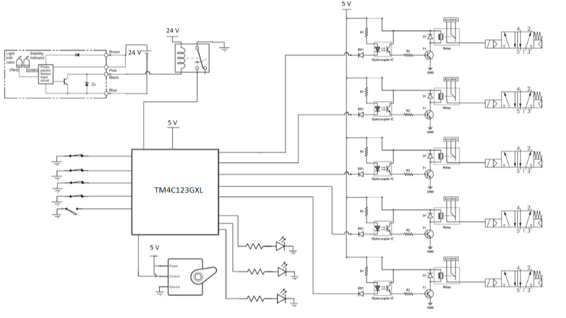
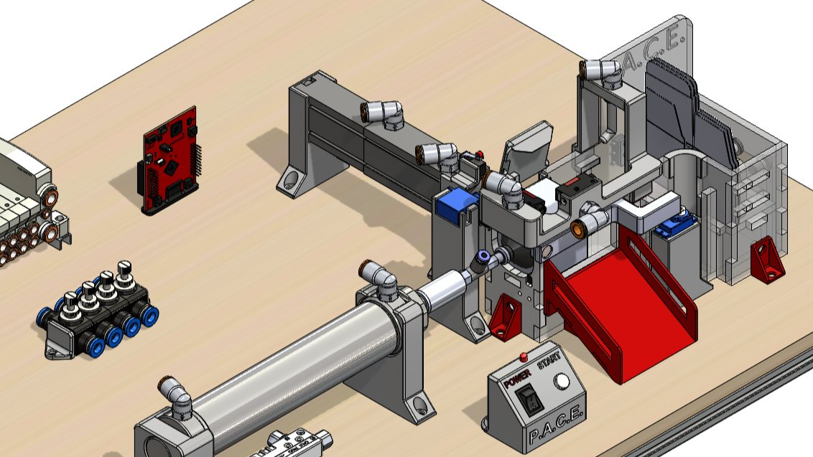
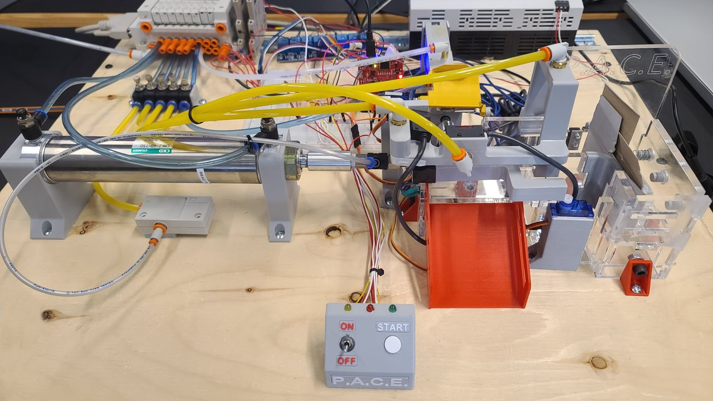
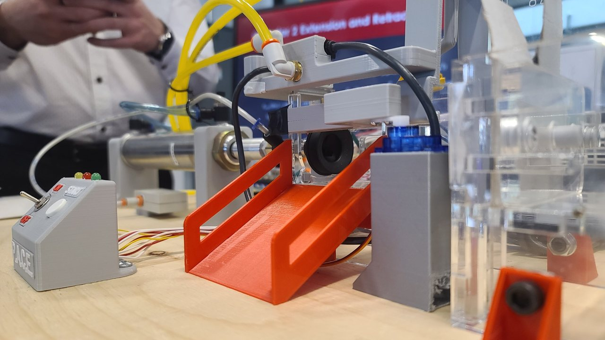
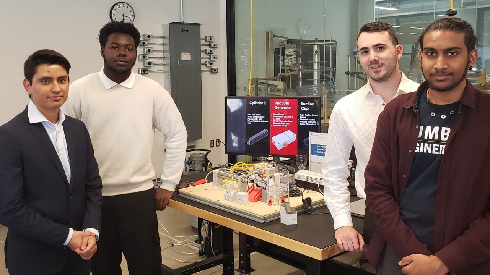

Designed an automated assembly line capable of opening a folded cardboard box and closing its flaps without human intervention. The selected design combined pneumatic actuation, a servo-driven closing mechanism, and a spring-loaded magazine to feed boxes into the system.
SolidWorks CAD, 3D-printed prototypes, and laser-cut acrylic structures were used to develop and validate the design, with a Texas Instruments Tiva C Series (TM4C123GXL) microcontroller coordinating actuator operation.
A Critical Failure Mode was the failure to detect the correct state of the different production steps. Failing to detect them would result in an incorrect product and could damage the system if two incompatible steps ran simultaneously.
We strategically placed switches, part-present sensors, and photoelectric sensors to detect the correct completion of a step. A simple color indicator helped with troubleshooting and notified the user.
Given monetary and time constraints, it was decided that the design should be neither mechanically complex nor costly.
Therefore, the chosen solution used air nozzles to bring down the side flaps, avoiding motors and complicated mechanisms.





Developed a compact assembly-line prototype for automatically opening and closing folded cardboard boxes using a spring-loaded magazine, a pneumatic suction mechanism, air-assisted side-flap folding, and a servo-driven top-flap closing mechanism. The system uses air jets to direct the box flaps and pneumatic actuators to move the box throughout the system. The system runs on a Texas Instruments Tiva C Series microcontroller programmed in assembly language, directly controlling memory-mapped registers, with no libraries used.
The selected architecture prioritized simplicity, modularity, and ease of manufacturing while reducing the number of moving components compared with the alternative conveyor-based concept.